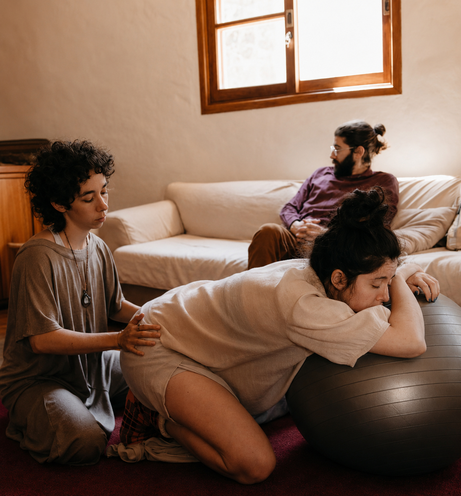

Oiê, eu sou a Anahí
Sou filha da Ivana e do Heleno, mulher, mãe da Artemísia e do Cainã e doula, dentre tantas outras que poderia citar aqui, as que já fui, as que sou e as que ainda serei.
Minha maior vontade com a doulagem é que as mulheres que até mim chegam possam ter, de verdade, alguém como um ponto de referência e suporte nessa jornada de gestar e se preparar não só para o parto, quanto para a maternidade. Não é um processo fácil, não é um processo linear, não é óbvio, e é justamente por isso que este é um processo que me encanta: olhar para as histórias e para as individualidades, e poder estar junto com essa família que vem nascendo.
Olhar e cuidado integral para cada momento
Cada serviço é pensado para oferecer a segurança e o afeto que você e seu bebê precisam.

Acompanhamento durante a gestação
Encontros para preparação teórica, física e emocional.
Ver detalhes arrow_forward
Suporte durante o parto
Acompanhamento presencial durante todo o processo de trabalho de parto, oferecendo suporte e presença continua.
Ver detalhes arrow_forward
Amparo durante o puerpério imediato
Apoio nas primeiras horas e dias após o nascimento, auxiliando na adaptação e cuidados iniciais.
Ver detalhes arrow_forward
Cápsulas de Placenta
Honrando e respeitando esse órgão sagrado, e devolvendo a ele a força de te nutrir durante o pós parto.
Ver detalhes arrow_forward

Chá de Bençãos
Espaço de troca entre a gestante e sua rede, abrindo espaço pra cuidado e amparo.
Ver detalhes arrow_forwardPor que ter uma Doula?
Dentro de um processo de gestar e parir, cada profissional e pessoa ali tem um papel muito importante. A doula é aquela que vai estar com você durante a gestação, te preparando com informações embasadas cientificamente, mas também olhando para a sua história individual. É aquela que vai adentrar a intimidade e construir confiança e vínculo com a família durante a espera, justamente para, na hora do parto, ser um porto seguro para esse momento tão intenso. A doula é quem vai estar ao seu lado em todos os momentos que você desejar. Enquanto as profissionais técnicas estarão desenvolvendo o papel do cuidado técnico, a doula pode estar única e exclusivamente ali para você.
Apoio emocional
Acolhimento contínuo, presença e escuta ativa. Você vai poder se sentir tranquila no lugar de cuidado e amparo.
Conforto físico
Uso de métodos naturais de conforto e alívio da dor, massagens, técnicas de respiração, sugestões de posições que auxiliem no processo, entre muitas outras coisas.
Informações baseadas em evidências
Educação perinatal, esclarecimento de dúvidas técnicas, auxílio na construção do plano de parto e suporte para tomadas de decisão conscientes.
Relatos de quem recebeu meus cuidados
"Não consigo colocar em palavras o quanto eu sou grata por você e por seu trabalho incrível. Eu já tava super feliz com os encontros e todo o suporte antes do parto, mas realmente a sensação que fica do parto é que eu não conseguiria ter feito sem você. Cada toque seu foi maravilhoso e ajudou demaisss. Não falei nada porque tava tudo perfeito hahaha foi suas massagens que me aliviaram mais, junto com todo suporte do Rafa."
Yuna
"Agradeço sua presença desde o inicio do acompanhamento foi essencial. O Thiago tbm está agradecendo demais aqui todas vocês mas em especial você"
Giulia
"Quero muito te agradecer por tudo, por sua medicina, por seu doular, você foi essencial na minha jornada na partolandia. Que muitas gestantes tenham essa oportunidade de ter você com elas no processo. Muita abundância e prosperidade na sua vida."
Marciele